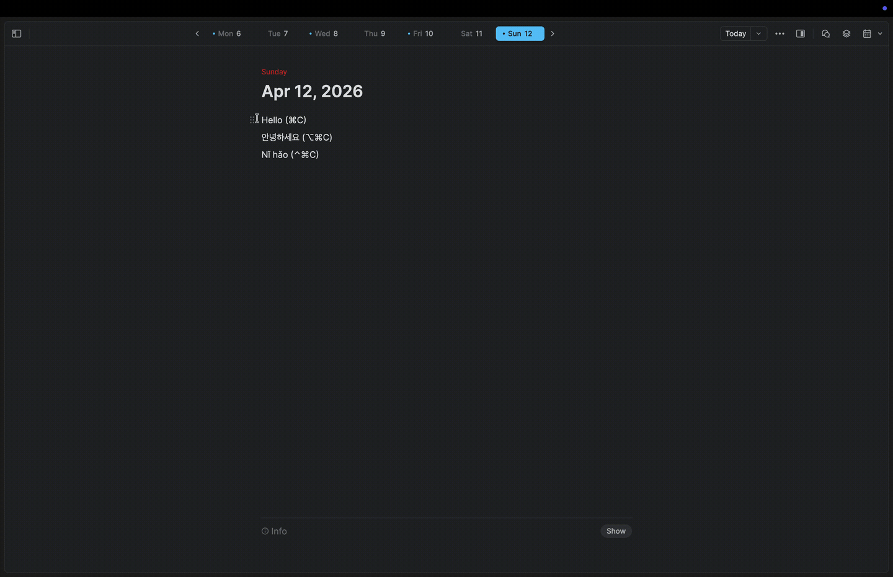
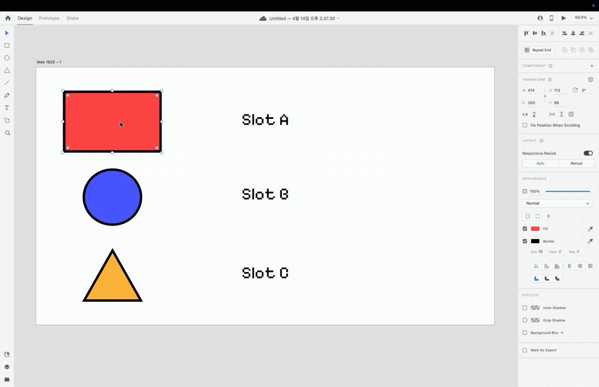

DualClip gives you three dedicated clipboard slots — A, B, C — with their own keyboard shortcuts. Decide where things go. Recall them instantly. Nothing ever touches the disk.
Clipboard history apps make you scroll. Search. Recognize. They turn a one-key action into a small UI puzzle. DualClip flips it: stash deliberately, recall by muscle memory.
Highlight any text, image or file. Press the slot’s copy shortcut. It lands in slot A, B or C.
Anywhere in macOS, hit the matching paste shortcut. The slot’s contents drop in atomically.
Your normal system clipboard keeps doing its thing. DualClip lives next to it, never on top of it.
A, B and C — labelled, isolated, instantly addressable. No history list to scroll.
Bind copy & paste to any modifier combination. Defaults make sense; rebinds take seconds.
DualClip swaps in your slot, pastes, and restores your system clipboard before you blink. Tune the timing if an app needs longer.
A peek at what’s in each slot — text, code, or image preview — without leaving the keyboard.
Slot contents live in memory. Quit the app or shut down the Mac and they’re gone.
No telemetry, no analytics, no cloud, no accounts. The source code says so.
One download runs natively on Apple Silicon and Intel Macs. Signed and notarized by Apple.


Every line of the app is on GitHub. There is no server. There is no analytics endpoint. Slot contents live in a Swift array in RAM and are wiped when the process exits. You can read the code in an afternoon.
DualClip is free, open source, and built by one person. If it saves you time, a sponsorship helps keep development going.